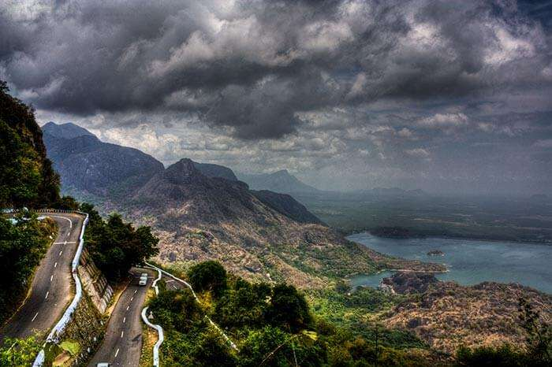
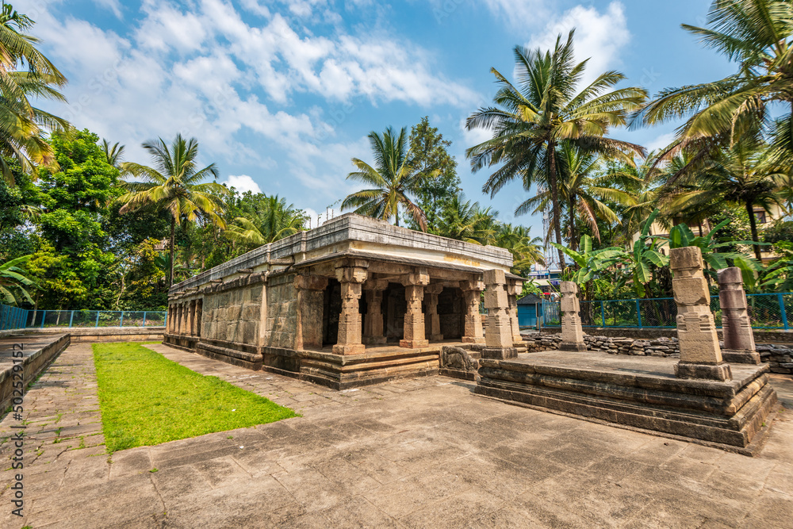
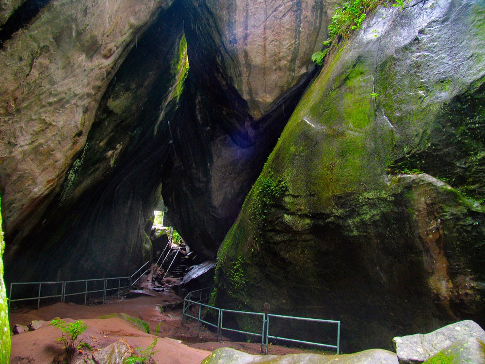
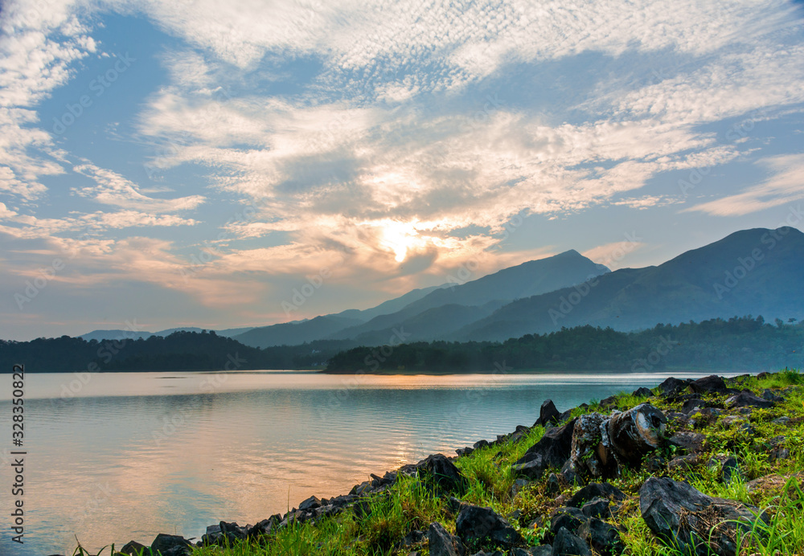
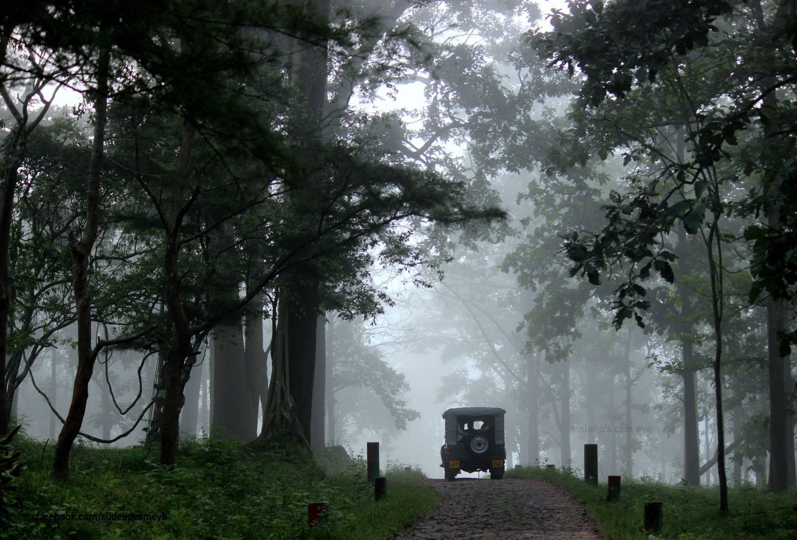
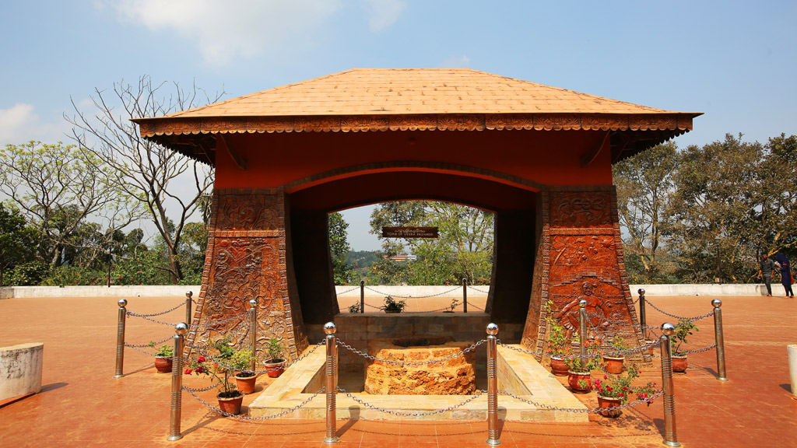
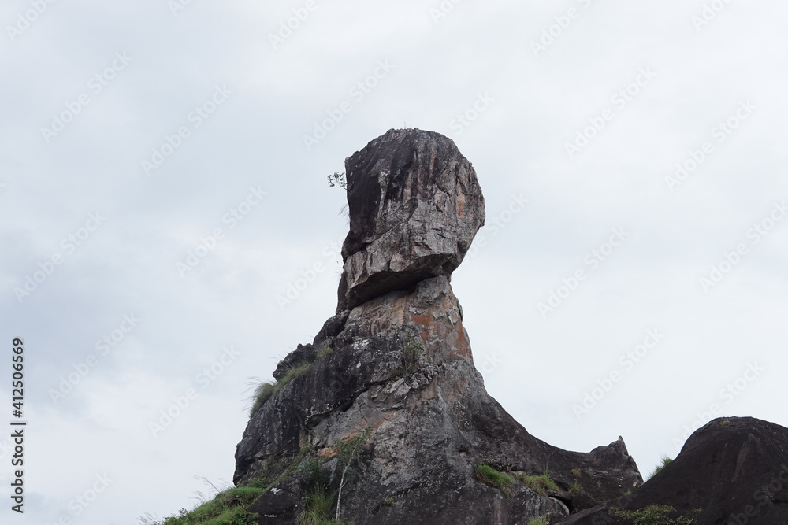

Ghat Viewpoint is the gateway to the green paradise - Wayanad, situated at an altitude of 700 m (2296 ft.) above the sea level. The trek to the Viewpoint is through serpentine Ghat pass and steep mountains with breathtakingly beautiful sights of lush greenery everywhere and the streams of rivers on both the sides. One can reach the Viewpoint only through nine hairpin curves and the feel it offers is filled with fun, excitement and adventure. One sees an outstanding panoramic view of the green forest, beautiful valleys, gurgling stream, lofty mountains and the winding roads with hairpin bends from this viewpoint that will mesmerize you to the core.

The Jain Temple in Sulthan Bathery is one of the most important among the many Jain temples in Kerala. Dating back to the 13th century, the temple is said to have been built in the prevalent architectural style of the then reigning Vijayanagar dynasty. One realises the sanctity and vivacious past of this temple by its grandeur and mystique. The temple is a protected monument of Archeaological Survey of India.

Meenmutty Falls is a waterfall located 45 kilometres (28 mi) from Trivandrum city in Thiruvananthapuram District in the Indian state of Kerala, India.[1] The falls are located near the Ponmudi hill station, Thiruvananthapuram district and Agastya Mala Biosphere reserves.[2] This waterfalls is situated along the upper riparian course of Vamanapuram River.

Edakkal Caves
Ghat View Point

Banasura Sagar Dam
Bathery Jain Temple

Tholpetty Wildlife Sanctuary

Pazhassi Raja Tomb

Phantom Rock
Meenmutty Waterfalls